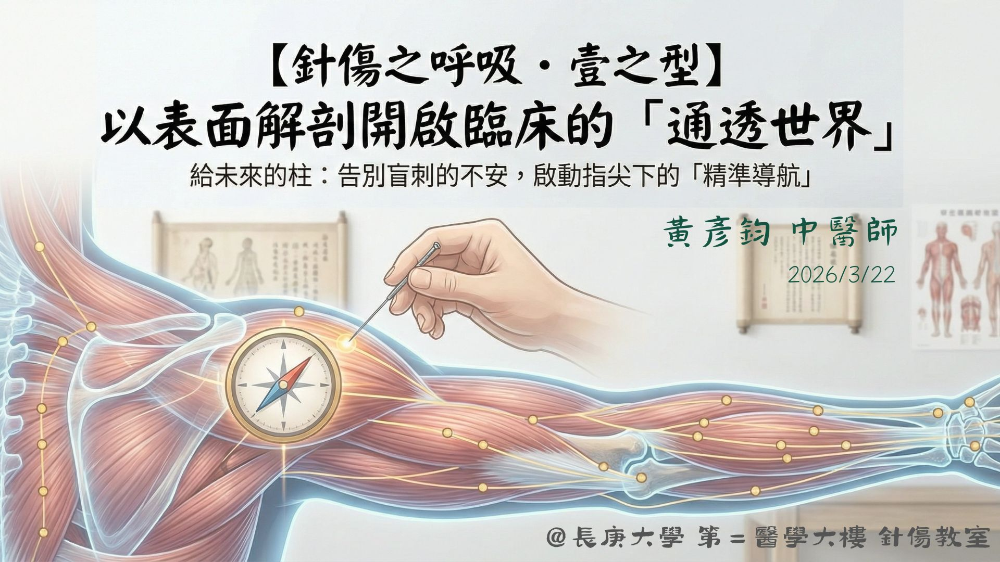

來吧！這週日，開始返回校園，從幼小的心靈開始灌迷湯！
來吧！這週日，開始返回校園，從幼小的心靈開始灌迷湯！
無論時代如何變遷，古今中外醫學所面對的，始終是遵循相同運作機制的人體。即便病理現象不斷演變，各派醫理的描述語彙各有側重，但所有的治療哲學，最終皆立足於同一套客觀的生理結構。
正如《素問・陰陽應象大論》所言：「智者察同，愚者察異。」
面對畢業在即的真實焦慮，能越早掌握一套可驗證、可再現、可依靠的評估系統，就越能減少進入臨床時的壓力與不安。
在真正踏入猶如叢林遊戲的臨床實戰前，先回歸人體的基礎。掌握了最核心、具備學理根據的原則，才能以不變的結構應萬變的病象，最終在各派學說中，開展出屬於自己的「呼吸法」！
